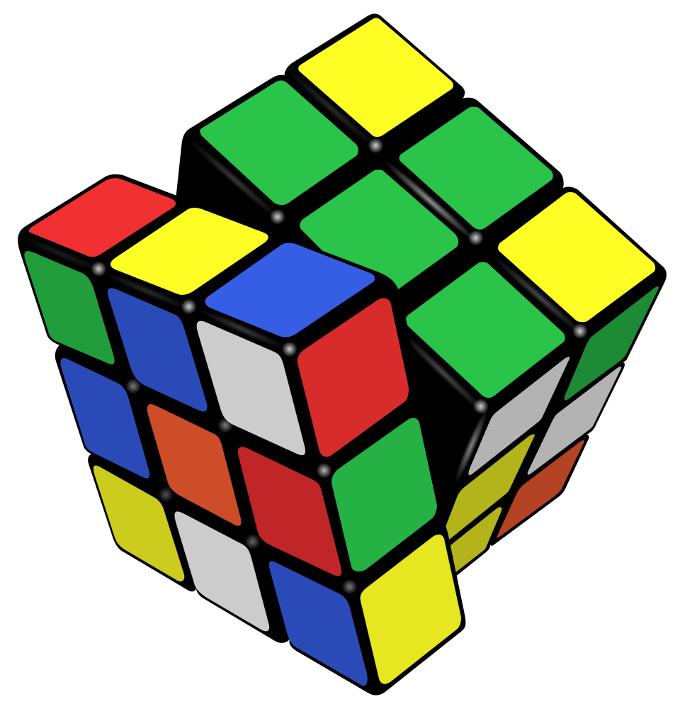
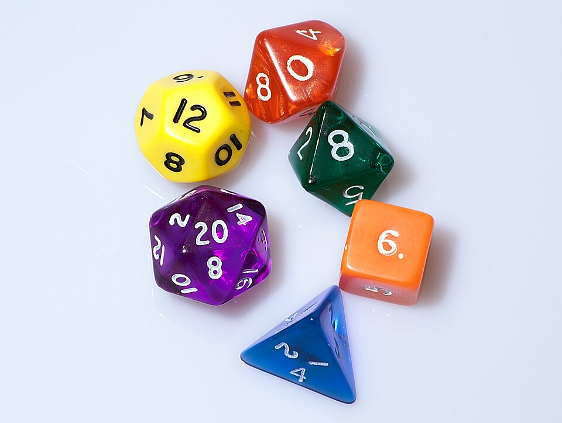

3 shirts × 4 pants = 12 outfits 5! = 5 × 4 × 3 × 2 × 1 = 120 C(8, 3) = 56 possible teams
Those three lines are the heart of combinatorics — the art of counting WITHOUT listing. The first line counts outfits without drawing a single stick figure. The second counts ways to line up five dogs without writing down all 120 orders (you'll soon see why that's lucky). The third counts three-person teams — and it's the trickiest idea in the lesson, because a team doesn't care about order, but counting naturally does. Taming that mismatch is the real skill here.
Why do people care? Because counting is everywhere, and listing is hopeless. A 6/49 lottery ticket has C(49, 6) = 13,983,816 possible combinations — that's why jackpots are so rare. Passwords, video game loadouts, sports schedules, phone numbers, and every probability question you'll ever meet all start with counting. (Already finished the Probability lesson? This is the counting engine that makes it even stronger.)
In this lesson, you will:
- 1.Learn the counting principle — why AND means multiply
- 2.Meet the factorial — the "everyone in a line" machine
- 3.Count permutations — SOME of the people, in order
- 4.Count combinations — some of the people, order forgotten
- 5.Master the big question: does order matter? (The swap test!)
- 6.Handle restrictions — picky slots first
- 7.Learn two sneaky shortcuts: complements and cases
- 8.Learn the common mistakes so you never make them
- 9.Practice with 100 problems at the end — including puzzles with more than one right answer!
How to use this lesson: read the sections in order. Each section starts with the key idea you'll learn in it. Take your time, and try every "Your Turn" box with a pencil and paper. For most of these problems, listing every possibility would take all day — the whole point is to count smart. Ready? Let's go!
📸 Pictures

A Rubik's Cube can be mixed up in 43,252,003,274,489,856,000 different ways. Counting that is combinatorics! See source ↓

Dice with 4, 6, 8, 10, 12 and 20 sides. If you roll them all at once there are 4 × 6 × 8 × 10 × 12 × 20 = 460,800 possible results. AND means multiply! See source ↓
🗺️ Your lesson map
The Counting Principle — AND Means Multiply 🧩Lesson 2
Factorials — Everyone, Get in Line! 🎯Lesson 3
Permutations — Some of Them, In Order 🔍Lesson 4
Combinations — Order Doesn't Matter ⚡Lesson 5
The Big Question — Order or Not? 🌟Lesson 6
Picky Slots First 🛠️Lesson 7
Sneaky Shortcuts — Complements, Cases, and Grids ⚠️Lesson 8
Watch Out! Common Mistakes 🧠Lesson 9
Review — The Big Picture 🏋️Practice Problems
100 problems to try ✅Answer Key
Check your work
📚 Picture Sources
- Picture 1 · Rubik's cube. By Booyabazooka. CC BY-SA 3.0. From Wikimedia Commons: https://commons.wikimedia.org/wiki/File:Rubik's_cube.svg
- Picture 2 · Dice (typical role playing game dice). By Diacritica. CC BY-SA 3.0. From Wikimedia Commons: https://commons.wikimedia.org/wiki/File:Dice_(typical_role_playing_game_dice).jpg

.jpg){kind=link}